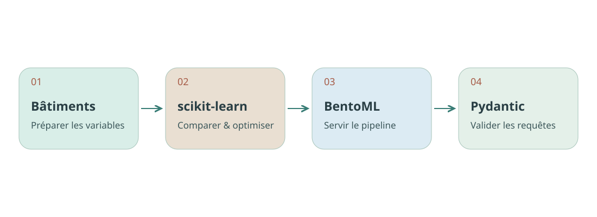

Schéma explicatif du périmètre décrit ; les environnements sont précisés dans l’étude.
Le besoin et ma contribution
Estimer la consommation de bâtiments non résidentiels à partir de leurs caractéristiques. J’ai préparé les données, comparé des modèles, ajusté les hyperparamètres puis exposé la prédiction avec son prétraitement.
Du notebook au service
- Pipeline scikit-learn : transformation des variables numériques et catégorielles avec ColumnTransformer, StandardScaler et OneHotEncoder.
- Baseline et comparaison de régression linéaire, SVR et Random Forest ; validation croisée et GridSearchCV.
- BentoML sert le pipeline ; Pydantic contrôle les entrées et certaines cohérences entre champs.
- La réponse inclut la version du modèle ; la transformation logarithmique est inversée et les unités sont converties.
Conserver le prétraitement avec le modèle
Emballer préparation et estimateur dans un même pipeline réduit le risque d’appliquer une transformation différente à l’inférence. Les contrôles d’entrée rejettent notamment des années ou surfaces incompatibles avec le domaine retenu.
Évaluation documentée
Le split comprend 1 292 exemples d’entraînement et 323 de test. Le R² de validation croisée optimisé est 0,6959 ; MAE test 0,4969 et RMSE test 0,6817 sont calculées sur la cible logarithmique, pas en MWh. Le R² train de 0,9089 indique un écart de généralisation à discuter. Les tests HTTP locaux vérifient des requêtes valides et invalides.
Périmètre du service
Le modèle porte sur l’énergie, pas sur un prédicteur CO₂ ou des séries temporelles. L’API est locale : déploiement continu, monitoring en production et disponibilité publique ne font pas partie des résultats démontrés.
Code et éléments de preuve
Les extraits et résultats ci-dessous proviennent des livrables du projet, consultés le 16 novembre 2026. Les traitements n’ont pas été réexécutés pour cette présentation.